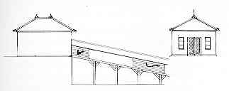

|
4. Fjällgatan 33 (?) Det lilla hus vid Fjällgatan som nu är servering sommartid var från början ett våghus, byggt 1872 och ritat av den kände arkitekten Axel Kumlien. Det ägdes av spannmålsgrossisten C. H. Matton som hade sina magasin i hamnen nedanför. Från våghuset gick en "rullväg", ett transportband, ner till magasinen. Det var säkert mycket praktiskt eftersom man inte fick eller kunde köra med häst och vagn på den smala träbron nere vid hamnen.

Längst i öster svängde Fjällgatan in i Ersta backe som ledde mellan egendomarna Ersta och Lilla Ersta ner mot Tjärhovsgatan (nu del av Folkungagatan).
|